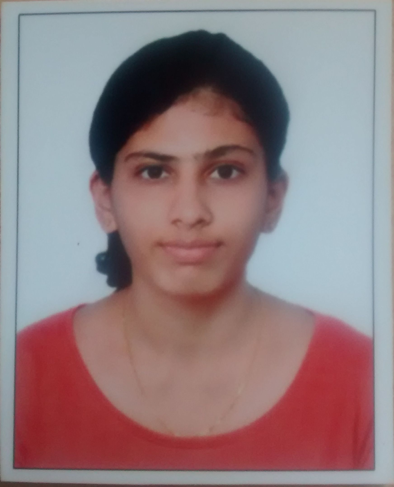

You are the center of our Universe!
My dream of joining an IIT came true only because of highly respected Dr Raghunath Sir
of RLC Institute. I have a great respect for him. He cleared all my doubts and because of
him, I could not only secure 87th rank in GATE but also consistently achieved best
CGPA in my B.E degree. Dr Raghunath Sir gives utmost individual attention/concern to
all students and right direction at right time to achieve our goal. I am proud to say that I
am the student of RLC Institute.

SAGAR SUDHAKARA
AIR 87
MTech Student in IIT Bombay

Being at RLC has been one of the best phases of my life. At RLC, my understanding of
concepts was enhanced. Problems and tests increased understanding of the subject.
The guidance provided here helped me to achieve a good rank in GATE and join
Qualcomm. This is the best place for students interested in pursuing higher studies in
India in EC.
.jpg)
Supreeth A
AIR 105
Lead Engineer at Qualcomm

RLC is the best place to be at, if one wants to understand the concepts in Electronics
and Communication. Importance is given not only to prepare for GATE but also to
master each and every subject thoroughly, which instils a sense of confidence. Subjects
that seemed daunting and boring became easy and interesting. RLC has always been a
great source of inspiration and support, thanks to Raghunath Sir!

Bhaghyashree Puranik
AIR 123
MTech Student in IIT Kanpur
RLC has been one of the most satisfying experiences. Academically, I have learned the
most at RLC - more than anywhere else.
Inquisitiveness is valued here. This is more than a place where one sits with heaps of
books and learns how to solve exam problems - much more. It was a lot of fun too!
This is a place where teachers become more than teachers, classmates become more
than classmates. We became a family here. One would not want to leave RLC. With my
mindset, I felt in perfect "resonance" with the place and Raghunath sir,an incredibly
dedicated teacher.
I am always going to remember these words of Raghunath sir - "An argument in most
matters leaves one as a winner and other as a loser; but in an argument in subject, both
can gain".
Ganesh Ramachandra
AIR 127
MTech Student in IIT Kanpur
Being a part of RLC was one of the best moments in life. We get to learn and most
importantly enjoy complete Electronics. From understanding difficult concepts to solving
questions for competitive exams, "RLC is THE PLACE TO BE IN". This helped me
entirely in getting a good job, a masters at IISC and a bunch of great friends and
memories.
Bharat Hegde
AIR 188
I am in IISC because of Raghunath Learning Centre. I was very weak in basics of
electronics and RLC strengthened my basics in almost all the subjects of ECE. I had lots
of fun attending classes, solving problems, discussing with teachers and friends. If you
intend to attend RLC (which you should) don't miss even a single class.
Sugana Mekala
AIR 200
Student at IISc
RLC helped me to understand the concepts clearly and appreciate the subject.The
distinguishing factor about RLC is that, the students are not just trained to crack GATE.
Mastering the concepts is given paramount importance.This helps the students to
appreciate the subject and crack exams/placements confidently.
Aditya Warnulkar
AIR 229
MTech Student in IIT Kanpur
I am able to secure good Gate rank and an internship at broadcom only because of
RLC. thanks to my teachers.
I cracked interview in IISc admission because of the way of thinking i developed in RLC.
The way you develop high level concepts from fundamentals and the intuition will make
you addictive to attend classes regularly and clarify your doubts through interaction.
M Hariprasad
AIR 280
Student at IISc